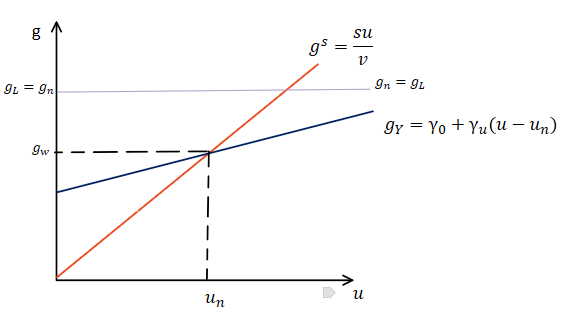
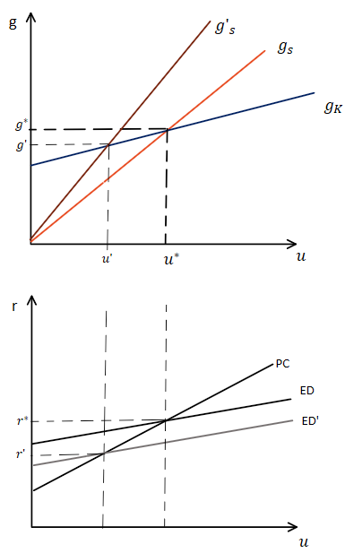
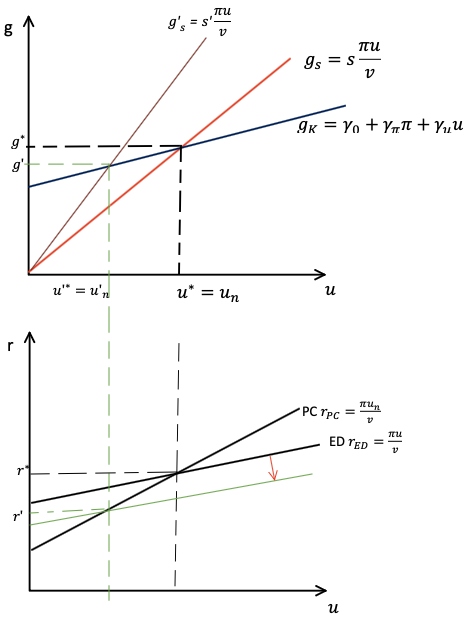
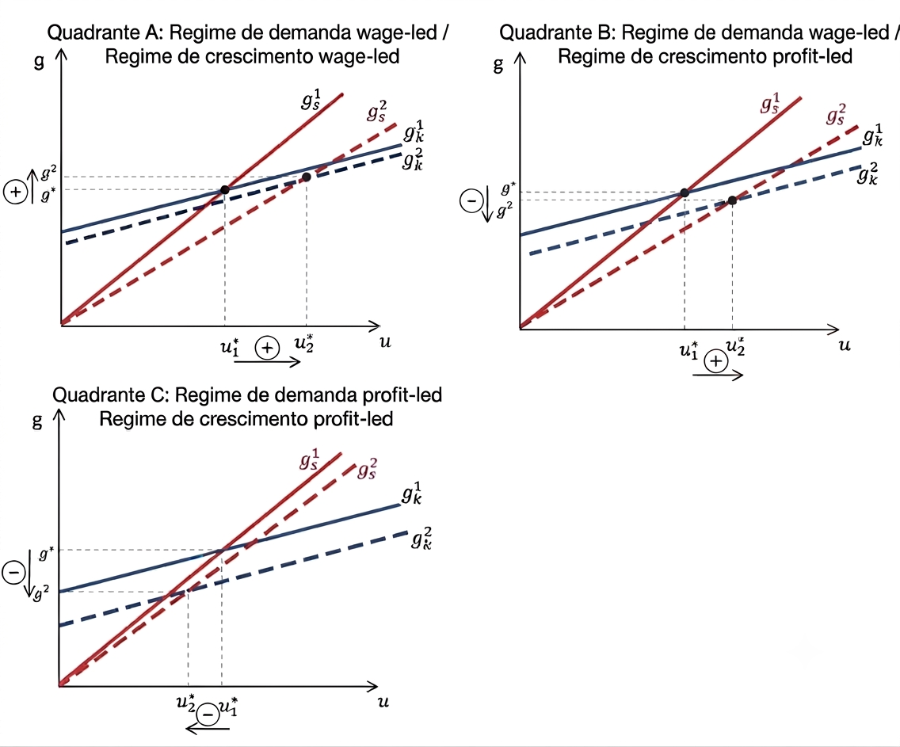
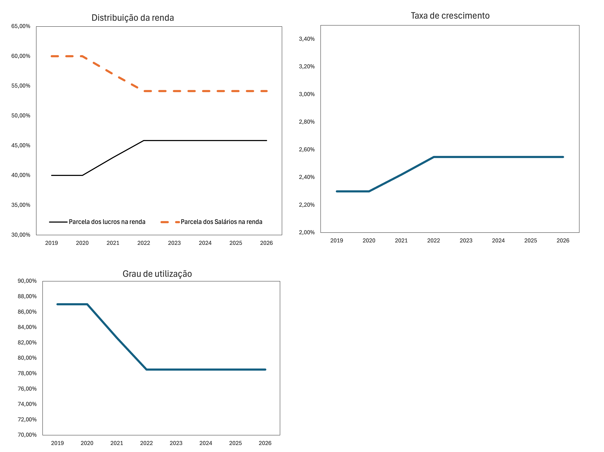
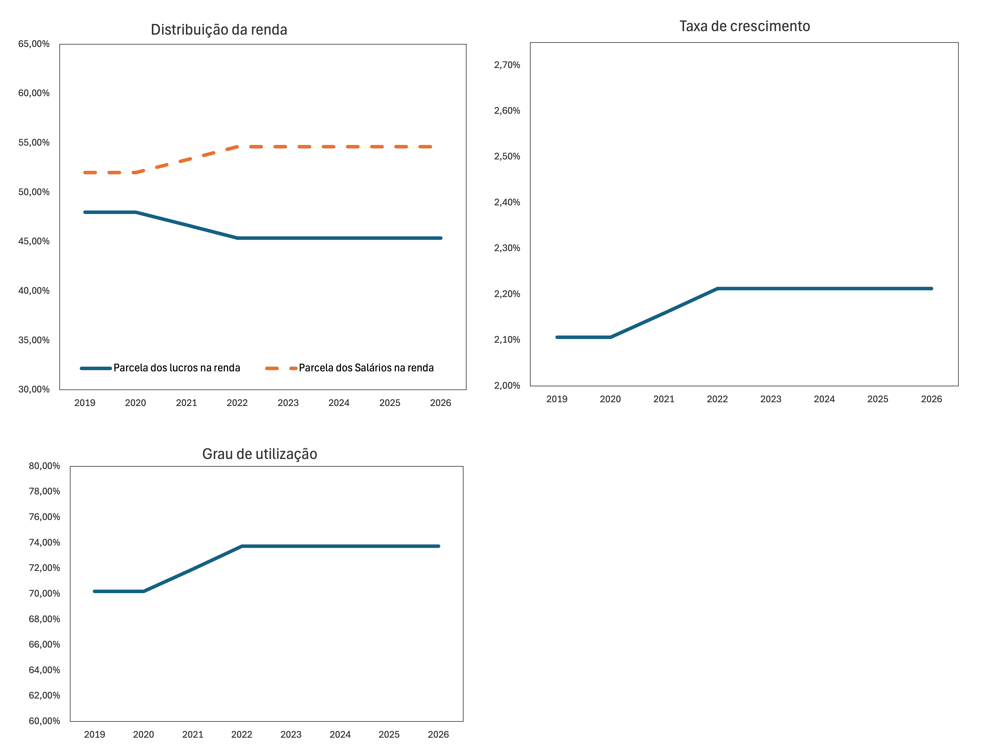
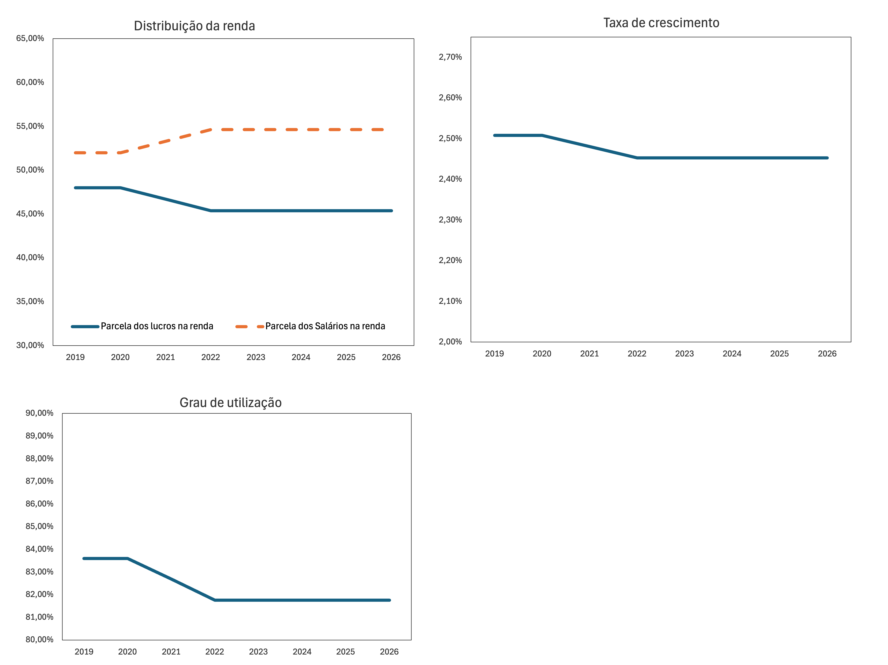

7 Exercícios
Esta seção reúne questões sobre os modelos de Harrod e Kalecki. As respostas foram mantidas ocultas para permitir que o estudante tente resolver cada questão antes de consultar a discussão correspondente. Para visualizar uma resposta, basta abrir o campo Consultar resposta ao final de cada exercício.
7.1 Questão 1 — Variáveis do modelo de Harrod
Preencha a tabela abaixo com uma breve explicação do que cada variável representa no modelo de Harrod. Além de nomeá-las, procure explicitar a intuição econômica associada ao papel que desempenham na mecânica do modelo.
| Variável | Significado e intuição econômica |
|---|---|
| Grau de utilização da capacidade instalada | |
| Relação capital-produto | |
| Taxa de crescimento efetiva | |
| Taxa de crescimento planejada | |
| Taxa de crescimento natural |
| Variável | Significado e intuição econômica |
|---|---|
| Grau de utilização da capacidade instalada | \(u = \frac{Y}{Y_K} \rightarrow\) É a razão entre o produto corrente e o produto máximo. Indica em que proporção do seu potencial a economia está operando. Na mecânica do modelo, pode ser interpretado como uma medida do nível de aquecimento da economia. |
| Relação capital-produto | \(v = \frac{K}{Y_K} \rightarrow\) Representa os coeficientes técnicos de produção e procura captar quanto as variações do estoque de capital impactam a capacidade produtiva da economia. Por isso, está associada ao mecanismo do acelerador. |
| Taxa de crescimento efetiva | \(g_y = \frac{su}{v} \rightarrow\) É a taxa de crescimento efetivamente verificada do produto. Depende da taxa de poupança, do grau de utilização efetivo e da relação capital-produto. |
| Taxa de crescimento planejada | \(g_W = \frac{s u_n}{v} \rightarrow}\) É a taxa que se manifestaria caso os estoques variassem conforme o planejamento dos produtores. Guarda semelhança metodológica com as expectativas de curto prazo de Keynes; por isso, utiliza o grau de utilização desejado em seu numerador. |
| Taxa de crescimento natural | \(g_n = g_L + g_A \rightarrow\) Representa o limite de crescimento do produto pelo lado da oferta. Na dinâmica do modelo, depende do crescimento da força de trabalho e da tecnologia. |
7.2 Questão 2 — As três taxas de crescimento em Harrod
O modelo de Harrod estabelece três taxas de crescimento. No equilíbrio, essas taxas devem se igualar para que o resultado exibido pelo modelo seja considerado estável. Na representação gráfica abaixo, a taxa de crescimento natural, associada ao crescimento populacional, encontra-se acima da taxa de equilíbrio estacionário.

a) Neste contexto, discuta brevemente quais seriam os efeitos de uma atuação pública que aqueça a economia, elevando o grau de utilização acima do nível desejado.
b) Feito isso, apresente, de acordo com o que foi discutido no curso, a visão de Harrod sobre os limites desse efeito.
a) O contexto apresentado é aquele em que o crescimento populacional (superior ao crescimento efetivo da economia) convive com uma taxa de crescimento efetiva inicialmente compatível com a taxa desejada. Isso sugere uma elevação persistente do desemprego. Em princípio, uma política pública capaz de aquecer a economia poderia combater esse resultado, elevando o grau de utilização e deslocando a trajetória do produto para cima. Entretanto, quando o grau de utilização corrente supera o desejado, novos ajustes das expectativas e das decisões dos produtores tendem a ocorrer. Esses ajustes podem afastar sucessivamente o grau efetivo do desejado e, portanto, do equilíbrio.
b) Para Harrod, à medida que o produto corrente se aproxima do limite determinado pelo crescimento natural, os empresários tenderiam a rever suas expectativas para baixo, tornando-se mais reticentes quanto à manutenção da expansão econômica. Desse modo, o ciclo de boom seria revertido em um ciclo de recessão.
7.3 Questão 3 — O mecanismo de equilíbrio do modelo kaleckiano canônico
O modelo kaleckiano canônico foi representado neste curso pelo seguinte sistema de três equações:
\[\begin{aligned} r &= \frac{\pi u}{v},\\ g_s &= s_{\pi}r,\\ g_K &= \gamma_0+\gamma_r r+\gamma_u u. \end{aligned}\]Como em todo modelo macroeconômico, no estado estacionário a taxa de crescimento da renda será compatível com uma situação em que poupança e investimento crescem à mesma taxa. Explique, em poucas palavras, qual é o mecanismo de transmissão que conduz ao equilíbrio desse modelo e por meio de qual variável ele opera.
Pelas equações do modelo, a taxa de lucro aparece tanto na equação da taxa de poupança quanto na função de investimento. Portanto, o ajuste entre poupança e investimento ocorre por meio da taxa de lucro. Entretanto, a taxa de lucro é uma função direta do grau de utilização da capacidade. Assim, quanto maior o nível de demanda efetiva — representado pelo grau de utilização —, maior será a taxa de lucro, o que eleva simultaneamente as taxas de poupança e de investimento.
O mecanismo de transmissão pode ser resumido da seguinte forma:
\[u \uparrow \quad\Longrightarrow\quad r \uparrow \quad\Longrightarrow\quad g_K \uparrow \quad\text{e}\quad g_s \uparrow. \]
A variável que permite esse ajuste é, portanto, o grau de utilização da capacidade instalada.
A mesma conclusão pode ser apresentada algebricamente. No equilíbrio, (\(g_s=g_K\)). Substituindo as funções de poupança e investimento:
\[ s\_{\pi}r=\gamma\_0+\gamma\_r r+\gamma\_u u. \]
Como (\(r=\frac{\pi u}{v}\)), temos:
\[ s\_{\pi}\frac{\pi u}{v} = \gamma\_0+\gamma\_r\frac{\pi u}{v}+\gamma\_u u. \]
A expressão evidencia que, dados os parâmetros e as variáveis exógenas do modelo, o grau de utilização é a variável endógena que permite compatibilizar as taxas de crescimento associadas à poupança e ao investimento.
A figura abaixo sintetiza o mecanismo de ajuste discutido na resposta.

7.4 Questão 4 — O paradoxo da parcimônia (Paradox of Thrift)
Na figura ao lado, temos a representação gráfica do modelo kaleckiano canônico estudado em aula. Tome-a como base para o exercício.
Suponha que um governo diagnostique o baixo crescimento dessa economia como resultado da insuficiência de poupança doméstica e procure compensar esse problema por meio de políticas públicas. O governo adota, então, uma medida bem-sucedida em aumentar a propensão média a poupar da economia. A expectativa é que, com uma taxa de poupança maior, haja mais recursos disponíveis para financiar novos investimentos.
a) Desenhe duas novas curvas sobre a figura (uma no gráfico superior e outra no inferior), representando o que muda após a política.
b) Em seguida, descreva se as expectativas do governo seriam alcançadas após o sucesso da medida adotada.

O aumento da propensão a poupar reduz o grau de utilização e desloca para baixo a curva de demanda efetiva, refletindo a menor propensão a consumir da sociedade. Como consequência, a taxa de lucro efetiva também diminui, como indicado no gráfico inferior.
Simultaneamente, o aumento da propensão a poupar faz a curva de poupança girar no sentido anti-horário. O novo equilíbrio é compatível com um grau de utilização menor e uma taxa de crescimento de equilíbrio também menor.
Intuitivamente, uma maior propensão a poupar desacelera a demanda. Sem perspectivas de venda suficientes, os empresários contraem seus investimentos. O resultado efetivo da política, portanto, é diferente daquele inicialmente esperado pelo governo. Esse é o paradoxo da parcimônia (paradox of thrift): uma tentativa de elevar a poupança pode reduzir a demanda, o investimento e, ao final, a própria taxa de crescimento da poupança e do investimento.
7.5 Questão 5 — Distribuição funcional da renda, demanda e crescimento no Brasil
O gráfico abaixo apresenta a distribuição funcional da renda no Brasil entre 2000 e 2021. No período, observa-se um contraste entre a taxa média de crescimento registrada entre 2005 e 2014 e aquela observada nos sete anos seguintes, quando passaram a ser adotadas medidas de contenção do crescimento dos ganhos reais dos salários. Ressalta-se que a taxa média de crescimento do período sombreado no gráfico foi superior à do período subsequente.

De acordo com o modelo kaleckiano canônico estudado em sala, contraste o comportamento do grau de utilização da capacidade instalada, da taxa de lucro e da taxa de crescimento nesses dois períodos. Articule a explicação com o paradoxo dos custos e analise os regimes de demanda e de crescimento da economia brasileira.
No modelo kaleckiano canônico, a contenção dos salários reduz o nível de demanda. Com uma demanda menor, a taxa de investimento também se reduz, produzindo um impacto adicional sobre o grau de utilização. Assim, mesmo que a participação dos lucros na renda aumente, o grau de utilização pode cair mais do que proporcionalmente, provocando uma redução da taxa de lucro. Com a queda do grau de utilização e da taxa de lucro, a taxa de investimento também diminui.
À luz dos dados apresentados, espera-se, portanto, que o grau de utilização, a taxa de lucro e a taxa de crescimento tenham registrado patamares menores a partir de 2015 do que aqueles observados no período anterior, qunado a parcela salarial crescia lentamente.
Esse resultado é compatível com um regime de demanda liderado pelos salários (wage-led), uma vez que uma maior participação dos salários na renda estaria positivamente relacionada ao grau de utilização. Pode-se ir além e caracterizar o período como um regime de crescimento liderado pelos salários, pois a taxa de crescimento foi superior no intervalo em que os salários apresentaram maior participação na renda.
7.6 Questão 6 - Paradoxo da poupança no modelo de Bhaduri e Marglin
O que é o paradoxo da poupança (ou de Thrifit) e como funciona sua dinâmica de longo prazo de acordo com o modelo pós-kaleckiano de Bhaduri e Marglin. Explique o resultado por meio de análise gráfica.
O paradoxo da poupança \(\rightarrow\) sustenta que o aumento da propensão marginal a poupar, ao desaquecer a demanda efetiva, teria impacto negativo sobre a taxa de investimento e, portanto, sobre a poupança macroecômica.
\[\begin{aligned} \frac{\partial u}{\partial s} < 0\\ \& \\ \frac{\partial g}{\partial u} >0 \end{aligned}\]
Este paradoxo segue válido para o fechamento proposto por Bhaduri e Marglin. Graficamente podemos constatar isso pela rotação que a mudança da propensão a poupar causa na Equação 5.3. A curva \(g_s\) rotaciona para dentro e intercepta a curva \(g_K\) em um novo ponto de equilíbrio, com menores taxas de crescimento e de demanda.

Intuitivamente, temos que o aumento da propensão a poupar derruba o consumo e reduz a demanda efetiva o que, para um dado markup desejado, faz com que as firmas optem por reduzir a taxa de crescimento dos investimentos e manter sua parcela dos lucros na renda, ainda que com menor taxa de lucro.
\[ s_\pi\uparrow \rightarrow g_s\downarrow \rightarrow u\downarrow \rightarrow g_K\downarrow \rightarrow u_n\downarrow \]
Algebricamente, não precisamos derivar para notar que o aumento de \(s_\pi\) na Equação 5.4 leva ao aumento do denominador, fato que reduz a razão. Ou seja, elevar \(s_\pi\) reduz \(u^*\). Concomitantemente, pela Equação 5.2 vemos que a queda de \(u\), tudo o mais constante, leva à queda de \(g_K\).
Assim, as duas condições para que o paradoxo de Thrifit ocorra foram satisfeitas.
7.7 Questão 7 - Paradoxo dos custos no modelo de Bhaduri e Marglin
Suponha uma política pública distributiva que tenha o efeito de aumentar a parcela dos salários na renda. Quais seriam as possíveis repercussões de longo prazo desta política em diferentes contextos econômicos (considere diferentes parâmetros comportamentais)? Explore sua análise nos efeitos sobre: a) o grau de utilização; b) a taxa de crescimento e c) o conflito distirbutivom por parcela na renda.
O efeito líquido de uma distribuição de renda em favor dos salários dependerá do efeito líquido entre o efeito lucratividade \((\gamma_\pi)\) e o efeito acelerador \((\gamma_u)\). Quanto maior for o efeito acelerador em relação ao efeito lucratividade, maiores serão as chances de termos um regime de demanda e crescimento liderado pelos salários (wage-led).

{width = “50%”}A Figura 5.2 ilustra o efeito de um aumento da parcela dos salários na renda em três casos distintos. Se lembramos da Equação 2.2, é fácil notar que para a taxa de lucro subir após o aumento dos salários (queda da parcela dos lucros), é preciso que o grau de utilização suba mais que proporcionalmente. Em outras palavras, o paradoxo dos custos só será verificado em um regime de demanda wage-led.
podemos representar a mudança de \(\pi\) na Equação 5.2 como uma mudança de intercepto da reta \(g_K\). Neste caso, o aumento dos salários é equivalente à queda da parcela dos lucros, portanto, diminuição do intercepto e, por isso, vemos um deslocamento para baixo da reta \(g_K\).
Concomitantemente, ao olhar para Equação 5.3 como uma equação linear, podemos notar que o \(\pi\) funciona como um coeficiente angular da reta. Ou seja, a queda do \(\pi\) reduz o coeficiente angular de uma função de primeiro grau, reduzindo sua inclinação (rotacionando no sentido horário). Em outras palavras: tornando a reta do plano cartesiano mais “deitada”.
O Quadrante A mostra que após a rotação da curva \(g_S\) no sentido horário e o deslocamento para baixo de \(g_K\), o novo equilíbrio se dá em um ponto compatível com maior grau de utilização e maior taxa de crescimento. Enquanto o primeiro resultado denota um regime de demanda liderado por salários, o segundo deve ser lido como um regime de crescimento liderado pelos salários.
Em uma economia totalmente wage-led, o conflito distributivo fica menos intenso, já que o aumento dos salários leva ao aumento do ritmo de acumulação do capital. O aumento salarial nesta economia enfrentará menos resistência pelo fato de beneficiar tanto trabalhadores, que reduzem seu risco de desemprego, como capitalistas, que gozam de maiores taxas de lucros oriundas da maior taxa de crescimento. Aqui é como se o capitalista ganhasse menos por unidade produzida, só que ao ampliar sua escala de produções e vendas, a taxa de lucro total responde positivamente.
O Quadrante B da Figura 5.2 representa um modelo de demanda wage-led, mas um regime de crescimento profit-led. Isto porque, apesar de o grau de utilização crescer após o aumento da parcela dos salários, isso não é suficiente para compensar a desaceleração do investimento puxada pela consequente queda da parcela dos lucros.
Neste caso, a validade do paradoxo dos custos dependerá de o aumento do grau de utilização compensar a queda da parcela dos lucros na renda, a ponto de aumentar a taxa de lucro. Mais uma vez, menores serão as chances disso acontecer, quanto maior for o efeito lucratividade do investimento, capturado pelo parâmetro \(\gamma_\pi\).
Se a economia em questão estiver num caso desse, o seu grau de utilização sobe, mas a taxa de crescimento de longo prazo cai. O efeito sobre a taxa de lucro é incerto e há fortes chances deste cenário acirrar o conflito distributivo e os trabalhadores terão maiores dificuldades em garantir uma manutenção de seus ganhos salariais. Isto porquê os salários, apesar de aquecerem a demanda e o emprego no curto prazo, reduzindo o risco do desemprego, nestas circunstâncias reduzirão a taxa de acumulação do capital e, a depender dos parâmetros, pode acabar reduzindo a taxa de lucro. Tal cenário tende a incentivar respostas mais acertivas da classe capitalista contra a política de distribuição.
Por fim, o Quadrante C da Figura 5.2 mostra que após o aumento da parcela dos salários, o novo equilíbrio ocorre já com o grau de utilização menor do que o inicial, caracterizando o regime de demanda como liderado pelos lucros (profit-led). Nestas circunstância, não tem como o regime de crescimento não ser liderado pelos lucros também, já que o efeito sensibilidade do investimento se mostrou significativo ante o efeito acelerador, provocando um forte deslocamento da curva \(g_K\). O paradoxo dos custos não é válido neste contexto.
Se este for o caso da economia em questão, o efeito desta política será negativo tanto sobre o grau de utilização como sobre a taxa de crescimento. Portanto, esta política distributiva condenará a economia a uma estagnação secular se não for revista. Neste cenário, ao abrir mão da parcela dos lucros na renda, o trabalhador reduzirá suas chances de ficar desempregado. O conflito distributivo pode ser intensificado pela situação de estagnação e compressão dos lucros.
7.8 Questão 8 - Regimes de Crescimento no modelo Bhaduri e Marglin
Preencha a tabela abaixo com uma breve explicação do regime de crescimento apresentado na imagem ao lado.
| Dados | Regime de Crescimento |
|---|---|
 |
|
 |
|
 |
| Dados | Regime de Crescimento |
|---|---|
| Aqui temos um regime de demanda wage-led constatado pelo fato de a queda na parcela salarial ter impactos negativos sobre o grau de utilização. Contudo, o regime de crescimento é liderado pelos lucros, pois o efeito lucratividade prepondera sobre o efeito acelerador, reduzindo a taxa de crescimento do estoque de capital. Provavelmente, os trabalhadores desta economia terão dificuldades para reverter suas perdas, pois os capitalistas estão vendo suas taxas de lucro subirem junto com o profit-share. | |
| Aqui temos um regime de demanda e crescimento liderados pelos salários. Este fato pode ser constatado pelo impacto positivo que o crescimetno da parcela salarial na renda produziu sobrre o grau de utilização e sobre a taxa de crescimento. Este regime representa bem a era fordista nos EUA, em que os ganhos trabalhistas eram aceitos com maior facilidade pelo fato de representarem ganhos na taxa de lucro capitalista. | |
| Aqui temos um regime de demanda e crescimento liderados pelos lucros. Isto denotado pelo fato de o crescimento da parcela salarial na renda ter provocado impactos negativos sobre o grau de utilização e a taxa de crescimento. Neste contexto, o investimento se mostrou muito mais sensível à distribuição de renda do que à demanda efetiva. Provavelmente, temos um caso em que o efeito lucratividade é bem superior ao efeito acelerador do investimento. Em uma economia com estas características, os trabalhadores encontrarão muitas dificuldades em sustentar seus ganhos distirbutivos, pois é provável que a desaceleração econômica que seguirá tais ganhos, ampliem o desemprego e seu poder de barganha salarial |
7.9 Questão 9 - Crítica à estabilidade Kaleckiana
Se assumirmos a existência de gastos autônomos, isto é, gastos independentes da renda e que não geram capacidade produtiva por si só, o mecanismo de estabilidade Kaleckiana passa a incorporar novas hipóteses para permanecer estável. Discorra sobre esta crítica e apresente a hipótese mencionada, bem como a solução proposta por seus críticos.
Revisitando a Equação 4.11, vemos que o aumento do gasto autônomo (\(\gamma_0 \uparrow\)) eleva o grau de utilização do estado estacionário. Isto acontece pois o modelo considera a distribuição de renda dada, portanto, o aumento do gasto autônomo, por meio de uma política fiscal expansionista, por exemplo, deslocaria apenas a reta do investimento (\(g_K\)), aumentando o grau de utilização corrente e o desejado. Na prática, é como se o capitalista fosse obrigado a rever o seu grau desejado conforme erra suas expectativas.
Considerando uma função de investimento genérica como: \[ g_k = \gamma_0 + \gamma_u (u - u_n)\]
Não é difícil notar que, diante um aumento dos gastos autônomos que amplie o grau de utilização efeitvo \((u^* \rightarrow u^*_1)\), não ajustar seu grau desejado seria análogo a se deparar, persistentemente, com uma demanda maior que a esperada. Assim, a solução kaleckiana à instabilidade Harrodiana, após a introdução de um choque de demanda autônoma, seria fazer o ajuste via o grau desejado pelos empresários. Nesta tradição se os gastos autônomos aumentarem persistentemente o \(u\), a igualdade da Equação 6.1 é mantida via ajustes no \(u_n\).
A crítica de Serrano (1995) e Allain (2015), portanto, vai no sentido de incorporar uma taxa de crescimento dos gastos autônomos e se perguntar até que ponto o grau de utilização desejado é que deveria se ajustar ao efetivo ou o contrário. Na leitura destes autores críticos, na hipótese de um gasto autônomo crescendo mais, o grau de utilização efetivo cresceria e induziria novas decisões de investimentos no curto/médio prazo. Mas, diferente da história contada até aqui pelos modelos kaleckianos, Franklin Serrano entende que uma vez maturado, o investimento realizado se torna capacidade produtiva, reduzindo o grau de utilização no longo prazo de volta para o seu grau desejado. Ao final desta história, os empresários conseguiriam convergir o seu grau efetivo exatamente para o desejado no longo prazo, sem espaço para erros sistemáticos.
Partindo da definição de poupança como uma parcela da renda, como os gastos autônomos \((Z)\), por não dependerem da renda prévia, irão drenar o montante poupado:
\[ S = s_r Y - Z\]
Após alguma manipulações chegamos em:
\[ g_s = s_r \frac{u}{v} - \frac{Z}{K} \]
Alternativamente, se quisermos manter a representação Kaleckiana para fins comparativos, podemos assumir toda a poupança induzida como oriunda dos lucros para reescrever a equação acima como:
\[g_s = s_r \frac{ \pi u}{v} - \frac{Z}{K} \].
Assim, a estabilidade Harrodiana \(\frac{su}{v} = \frac{s u_n}{v}\) do modelo é atingida por meio de ajustes de \(s\) e não de \(u_n\). Os empresários sempre conseguem manter a proporção de capital ocioso que desejarem e é a taxa média de poupança que funciona como estabilizador.
Neste modelo, \(s\) pode ser lida como a taxa média de pouapnça e será igual à \(h\), que é a propensão a investir dos empresários. Sempre que \(u>u_n\), os empresários ampliarão seu ímpeto a investir para um dado nível de renda, fazendo tanto que o grau de utilização se ajuste enquanto o investimento estiver crescendo acima da renda, portanto, a capacidade crescendo acima da demanda, quanto que a poupança média da economia caia conforme o estoque de capital (\(K\)) crescer mais rápido que os gastos autônomos (\(Z\)).
7.10 Questão 10 - A taxa de crescimento do modelo do supermultiplicador
Imagine uma economia que funcione tal como preconizado pelo supermulplicador sraffiano, na qual as empresas planejam operar com um grau de utilização da capacidade instalada de 80%, mantendo os 20% restantes como margem de segurança. Inicialmente, a capacidade produtiva agregada é de 1.000 unidades, enquanto a demanda efetiva corresponde a 800 unidades. Portanto, a economia opera exatamente no grau de utilização planejado.
Suponha que, em determinado momento, uma expansão dos gastos autônomos eleve a demanda efetiva para 900 unidades. As empresas, entretanto, não alteram seu grau de utilização planejado.
a) Explique como os empresários reagem inicialmente à elevação da demanda. Em sua resposta, apresente o comportamento esperado da propensão a investir e explique como esse mecanismo afeta a capacidade produtiva ao longo do tempo. Utilize os valores do enunciado para ilustrar sua argumentação.
b) Considere agora o movimento inverso: partindo da situação inicial, suponha que a demanda efetiva caia para 700 unidades. Explique como os empresários reagiriam e por que, nesse caso, a capacidade produtiva também se ajustaria até que o grau de utilização retornasse ao nível planejado.
c) Suponha que, além do aumento inicial da demanda, a economia passe a experimentar uma elevação persistente da taxa de crescimento dos gastos autônomos. Com base na representação gráfica do modelo, explique a diferença entre o equilíbrio de médio prazo e o ajuste de longo prazo. Em sua resposta, discuta o deslocamento da curva de investimento, o comportamento da propensão média a poupar e a rotação da curva de poupança.
d) Considerando os mecanismos discutidos nos itens anteriores, explique por que, nesse modelo, a taxa de crescimento dos gastos autônomos constitui o único determinante da tendência de crescimento de longo prazo. Sua resposta deve esclarecer por que a estabilidade do modelo não exige que os empresários revisem seus planos de utilização da capacidade instalada.
a) Inicialmente, a elevação da demanda efetiva de 800 para 900 unidades faz com que o grau de utilização da capacidade instalada aumente de 80% para 90%, ultrapassando o nível planejado pelos empresários:
\[ u=\frac{900}{1.000}=0{,}90>u_n. \]
Diante de uma demanda aquecida, os empresários aumentam sua propensão a investir, buscando ampliar a capacidade produtiva e retornar ao grau de utilização que consideram desejável. Após a maturação dos novos investimentos, a capacidade produtiva aumenta. Para que o grau de utilização retorne a 80%, ela deverá alcançar 1.125 unidades:
\[ u=\frac{900}{1.125}=0{,}80. \]
Portanto, a expansão da capacidade produtiva permite acomodar a demanda mais elevada sem que os empresários precisem alterar seus planos de utilização.
b) No movimento inverso, a queda da demanda efetiva de 800 para 700 unidades reduz o grau de utilização para 70%:
\[ u=\frac{700}{1.000}=0{,}70<u_n. \]
Diante do excesso de capacidade ociosa, os empresários reduzem sua propensão a investir. Com o passar do tempo, a menor realização de investimentos líquidos, juntamente com a depreciação do capital existente, reduz a capacidade produtiva. Para que o grau de utilização retorne a 80%, a capacidade deverá cair para 875 unidades:
\[ u=\frac{700}{875}=0{,}80. \]
Assim, tanto diante de uma expansão quanto de uma retração da demanda, é a capacidade produtiva que se ajusta às condições de demanda, permitindo que o grau de utilização efetivo retorne ao nível planejado.
c) A elevação persistente da taxa de crescimento dos gastos autônomos desloca a curva de investimento para cima. No novo equilíbrio de médio prazo, a interseção entre as curvas de investimento e poupança ocorre em um patamar superior de crescimento, de modo que:
\[ g'_Z=g'_K=g'_s. \]
Entretanto, esse resultado ainda não representa o equilíbrio final. Enquanto o grau de utilização permanecer acima do nível planejado, a propensão a investir continuará aumentando. Esse movimento eleva a capacidade produtiva futura e, simultaneamente, a propensão média a poupar.
Como a taxa de crescimento dos gastos autônomos é superior à taxa de crescimento do investimento nesse processo de ajustamento, a diferença entre essas taxas contribui para elevar a propensão média a poupar. Graficamente, esse movimento é representado por uma rotação da curva de poupança, que se torna mais inclinada.
O processo prossegue até que se estabeleça um equilíbrio de longo prazo compatível com a nova taxa de crescimento dos gastos autônomos. Nesse ponto, o grau de utilização retorna ao nível planejado pelos empresários, sem que seja necessário alterar esse planejamento.
d) O modelo estabelece que a taxa de crescimento dos gastos autônomos é o único determinante da tendência de crescimento de longo prazo. Isso ocorre porque os ajustes da propensão a investir e da propensão média a poupar permitem compatibilizar as taxas de crescimento da poupança e do investimento, mesmo quando o grau de utilização planejado permanece inalterado.
A estabilidade do modelo é, portanto, garantida pelo mecanismo de ajuste da capacidade produtiva. Quando a demanda supera o nível compatível com a utilização planejada, os empresários ampliam sua propensão a investir, elevando a capacidade produtiva futura. Quando a demanda fica abaixo desse nível, reduzem sua propensão a investir, permitindo que a capacidade produtiva diminua.
Desse modo, os empresários não precisam revisar sistematicamente suas expectativas ou alterar o grau de utilização que consideram desejável. A própria dinâmica do investimento promove o ajuste entre demanda e capacidade produtiva. No longo prazo, a taxa de crescimento dos gastos autônomos determina a tendência de crescimento da economia.
7.11 Questão 11 - O paradoxo da poupança no modelo do supermultiplicador
Imagine uma economia que atravessa um período de baixo crescimento. Preocupadas com a instabilidade econômica e com a necessidade de formar reservas para o futuro, as famílias decidem reduzir seu consumo e aumentar a parcela da renda que destinam à poupança. O governo apoia esse comportamento, argumentando que uma sociedade mais poupadora disponibilizará mais recursos para financiar investimentos e, consequentemente, permitirá um crescimento econômico mais acelerado.
Com base no modelo do supermultiplicador sraffiano, discuta criticamente essa interpretação.
Em sua resposta, explique por que uma mudança na propensão marginal a poupar pode produzir efeitos distintos sobre a economia no curto e no longo prazo. Considere, em particular, a reação da demanda efetiva, o comportamento dos empresários diante de mudanças no grau de utilização da capacidade instalada e o processo de ajustamento do estoque de capital.
Por fim, avalie se uma economia que apresenta crescimento mais elevado durante o período de ajustamento necessariamente terá uma taxa de crescimento de longo prazo superior àquela observada antes da mudança no comportamento das famílias.
A interpretação do governo parte da ideia de que uma sociedade mais poupadora disponibilizaria mais recursos para financiar investimentos. Entretanto, essa relação não se sustenta necessariamente no modelo do supermultiplicador, uma vez que a poupança não constitui uma fonte autônoma de demanda que determina o investimento. Pelo contrário, a poupança se ajusta ao nível de renda e ao investimento realizado.
Uma redução da propensão marginal a poupar significa que as famílias passam a consumir uma parcela maior de sua renda. Isso eleva o multiplicador e estimula a demanda efetiva. Inicialmente, como a capacidade produtiva não se altera imediatamente, o aumento da demanda provoca uma elevação do grau de utilização da capacidade instalada.
Diante de uma demanda aquecida e de um grau de utilização superior ao planejado, os empresários aumentam sua propensão a investir. A maturação desses investimentos amplia o estoque de capital e a capacidade produtiva da economia. Ao mesmo tempo, esse processo eleva a taxa média de poupança, mesmo que a propensão marginal a poupar permaneça menor. Assim, o mecanismo de ajustamento permite compatibilizar a poupança e o investimento sem exigir uma reversão da mudança inicial no comportamento das famílias.
O ponto central é que esse processo não sustenta indefinidamente uma taxa de crescimento superior. À medida que a capacidade produtiva se amplia, o grau de utilização retorna ao nível planejado pelos empresários. A propensão a investir deixa de crescer e a taxa de crescimento da economia converge novamente para a taxa de crescimento dos gastos autônomos.
Portanto, o paradoxo da poupança manifesta-se durante o processo de ajustamento, mas não altera a taxa de crescimento de longo prazo. O aumento da propensão marginal a poupar do enunciado pode produzir uma trajetória de crescimento mais vagaroso durante determinado período e reduzir permanentemente o nível de renda da economia. Por isso, mesmo que a taxa de crescimento retorne ao patamar inicial, a taxa média de crescimento observada ao longo do período de transição será inferior.
A resposta deve destacar, assim, que o modelo não nega os efeitos materiais de uma mudança na propensão a poupar. O que ele estabelece é que esses efeitos se manifestam sobre o nível de renda e a trajetória de ajustamento, e não sobre a tendência de crescimento de longo prazo, determinada pela taxa de crescimento dos gastos autônomos.
7.12 Questão 12 - O paradoxo dos custos no modelo do supermultiplicador
Imagine uma economia em que os trabalhadores organizam uma campanha por melhores salários. Após uma rodada de negociações, conseguem elevar sua participação na renda nacional, reduzindo a parcela apropriada pelos lucros. Parte dos empresários manifesta preocupação com a mudança, argumentando que a redução de sua participação na renda comprometerá a rentabilidade das empresas, desestimulará os investimentos e prejudicará o crescimento econômico.
Considerando o modelo do supermultiplicador sraffiano, avalie criticamente a posição dos empresários.
Em sua resposta, explique por que a redistribuição de renda em favor dos trabalhadores pode inicialmente estimular a demanda efetiva e o investimento. Em seguida, discuta como o processo de ajustamento da capacidade produtiva modifica esse resultado ao longo do tempo.
Por fim, esclareça por que o modelo não permite classificar a economia como permanentemente liderada pelos salários (wage-led) ou pelos lucros (profit-led), embora a redistribuição possa produzir efeitos relevantes sobre a trajetória de crescimento e o nível de renda.
A preocupação dos empresários parte da ideia de que uma redução da participação dos lucros na renda necessariamente comprometeria a rentabilidade e os investimentos. Entretanto, o modelo do supermultiplicador permite identificar um mecanismo pelo qual uma redistribuição de renda em favor dos trabalhadores pode produzir efeitos positivos sobre a demanda e a acumulação de capital.
Isso ocorre porque os trabalhadores possuem uma propensão marginal a consumir superior à dos capitalistas. Assim, quando uma parcela da renda é transferida dos lucros para os salários, o consumo agregado tende a aumentar. A redistribuição estimula o multiplicador da renda e eleva a demanda efetiva.
No primeiro momento, a capacidade produtiva permanece praticamente inalterada, de modo que o aumento da demanda provoca uma elevação do grau de utilização da capacidade instalada. Diante de uma utilização superior à planejada, os empresários aumentam sua propensão a investir. Esses investimentos, ao amadurecerem, ampliam o estoque de capital e permitem que a economia acomode o nível mais elevado de demanda.
Entretanto, esse estímulo ao investimento é transitório. À medida que a capacidade produtiva aumenta, o grau de utilização retorna ao nível planejado pelos empresários. A propensão a investir deixa de crescer e a taxa de crescimento da economia converge novamente para a taxa de crescimento dos gastos autônomos.
O resultado é que a redistribuição de renda em favor dos trabalhadores não altera permanentemente a taxa de crescimento de longo prazo. O modelo também demonstra que a taxa de lucro retorna ao seu patamar inicial após a conclusão do processo de ajustamento. Isso ocorre porque apesar de \(s \frac{\pi u}{v}\) cair por conta da distribuição de renda, a taxa média de poupança acaba sendo ajustada pelo crescimento do estoque de capital acima dos gastos autônomos \(\frac{Z}{K}\) na Equação 6.2.
Portanto, o paradoxo dos custos não se sustenta no longo prazo. Embora a redistribuição em favor dos trabalhadores estimule temporariamente a demanda, o investimento e o crescimento, ela não produz uma alteração permanente na taxa de crescimento ou na taxa de lucro de equilíbrio.
Isso não significa, contudo, que a distribuição de renda seja economicamente irrelevante. Durante o processo de ajustamento, a economia apresenta uma trajetória de crescimento mais acelerada e alcança um nível de renda permanentemente superior ao que teria sido observado sem a redistribuição. A taxa de crescimento retorna ao patamar inicial, mas passa a incidir sobre uma base de renda maior (ver Figura 6.6).
Por essa razão, o modelo não deve ser classificado como permanentemente wage-led ou profit-led. Sua tendência de crescimento é liderada pela demanda autônoma, enquanto as mudanças distributivas afetam o nível de renda e a trajetória de crescimento durante o ajustamento.